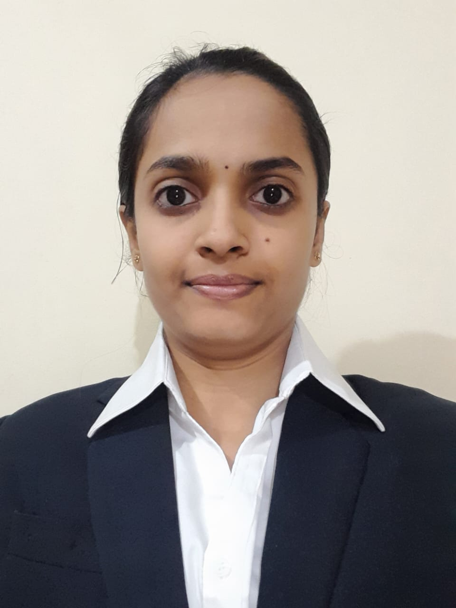

Computer Science Engineer | Web Developer | AI Enthusiast
Belagavi, Karnataka | 📧 jananya395@gmail.com | 🔗 GitHub | 💼 LinkedIn
Computer Science engineer skilled in Java, JavaScript, MERN with hands-on experience building data-driven web applications and AI-powered projects like Kannada speech automation and multilingual text extraction. Demonstrated ability to translate technical knowledge into tangible solutions, evidenced by a peer-reviewed IEEE publication and ongoing contributions in internships.
Voice-driven system published in IEEE Xplore for automated bank form filling.
Full-stack application with real-time SMS alerts using Twilio.
AI-based manuscript and monument recognition system supporting multiple languages.